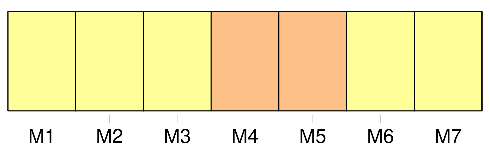
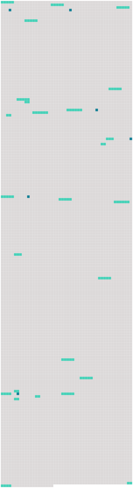

Longueur nb maillons : 31 mentions |
  |
[Les membres de la Commission] , directement et par l'intermédiaire de la Commission, appliquent l'approche de précaution, telle que définie dans les dispositions pertinentes du code de conduite et / ou de l'accord de New York de 1995, pour la conservation, la gestion et l'utilisation durable des stocks de poissons visés par la présente convention. [1 phrases] En particulier, [les membres de la Commission] prennent d'autant plus de précautions que les informations sont incertaines, peu fiables ou inadéquates. [2 phrases] Lorsque l'état des stocks de poissons visés ou des espèces non visées, ou des espèces associées ou dépendantes devient préoccupant, [les membres de la Commission] renforcent la surveillance qu' [ils] exercent sur ces stocks et espèces afin d'évaluer leur état et l'efficacité des mesures de conservation et de gestion.
[Ils] révisent régulièrement ces mesures en fonction des nouvelles informations scientifiques disponibles. [5 phrases]
[Les membres de la Commission] conviennent de conserver, avec l'ensemble de ses actifs et de ses passifs, et de renforcer la Commission interaméricaine du thon tropical établie par la convention de 1949. [13 phrases]
La Commission doit rechercher le personnel disponible le plus qualifié, et prendre dûment en considération l'importance de recruter ce personnel sur une base équitable afin de promouvoir une représentation et une participation larges [des membres de la Commission] [9 phrases] Celui -ci est atteint lorsque deux tiers [des membres de la Commission] sont présents. [4 phrases] [Les membres] élisent un président et un vice-président entre, à moins qu'il n'en soit décidé autrement, les distinctes parties à la présente convention. [5 phrases]
Dans ce cas, le président de la réunion doit veiller à ce que [tous les membres de la Commission] aient la possibilité d'exprimer [leurs] points de vue sur les propositions de décision, dont les parties tiennent compte pour prendre la décision finale. [1 phrases]
Le consensus de [tous les membres de la Commission] est requis pour les décisions concernant : [11 phrases]
Les décisions adoptées par la Commission conformément à la présente convention lient [tous les membres] quarante-cinq ( 45 ) jours après [leur] notification, sauf indication contraire dans la présente convention ou à moins qu'il n'en ait été convenu autrement lors de la prise de décision. [1 phrases]
La Commission établit un comité chargé de l'examen de l'application des mesures adoptées par la Commission, composé des représentants désignés à cet effet par chaque membre de la Commission, qui peuvent être accompagnés des experts et conseillers dont [ces membres] jugent la présence opportune. [36 phrases]
Les fonctions du directeur sont les suivantes : [18 phrases]
Le schéma adopté par la Commission doit être transparent et équitable pour [tous les membres] et détaillé dans le règlement financier de la Commission. [13 phrases]
Titre IV : Droits et obligations [des membres de la commission] [38 phrases]
[Les membres de la Commission] facilitent et promeuvent cette coopération, en particulier la coopération technique et financière, et le transfert de technologie, en tant que de besoin pour la mise en œuvre effective du paragraphe 1 du présent article. [10 phrases] [Les membres de la Commission] coopèrent afin de prévenir les différends. [7 phrases]
La Commission et [ses membres] encouragent tous les États et les organisations régionales d'intégration économique visés à l'article XXVII de la présente convention et, le cas échéant, les entités de pêche visées à l'article XXVIII de la présente convention qui ne sont pas [membres de la Commission] , à [le] devenir ou à adopter des lois et règlements conformes à la présente convention. [1 phrases]
[Les membres de la Commission] échangent des informations, directement ou par l'intermédiaire de la Commission, concernant les activités des navires des non membres qui compromettent l'efficacité de la présente convention. [1 phrases] La Commission et [ses membres] coopèrent, de manière compatible avec la présente convention et le droit international, en vue de dissuader conjointement les navires des non membres de pratiquer des activités compromettant l'efficacité de la présente convention.
À cette fin, [les membres] attirent, entre autres, l'attention des non membres sur les activités de ce type pratiquées par leurs navires. [50 phrases]
À moins qu'il n'en soit convenu autrement, les amendements à une annexe entrent en vigueur pour [tous les membres de la Commission] quatre-vingt-dix ( 90 ) jours après leur adoption conformément au paragraphe 3 du présent article. |
 |
La ressource peut être téléchargée sur la page Ortolang
Si vous avez des questions ou vous voyez des erreurs, merci d'envoyer un mail à silvia.federzoni89@gmail.com
Site développé par S. Federzoni (contact)